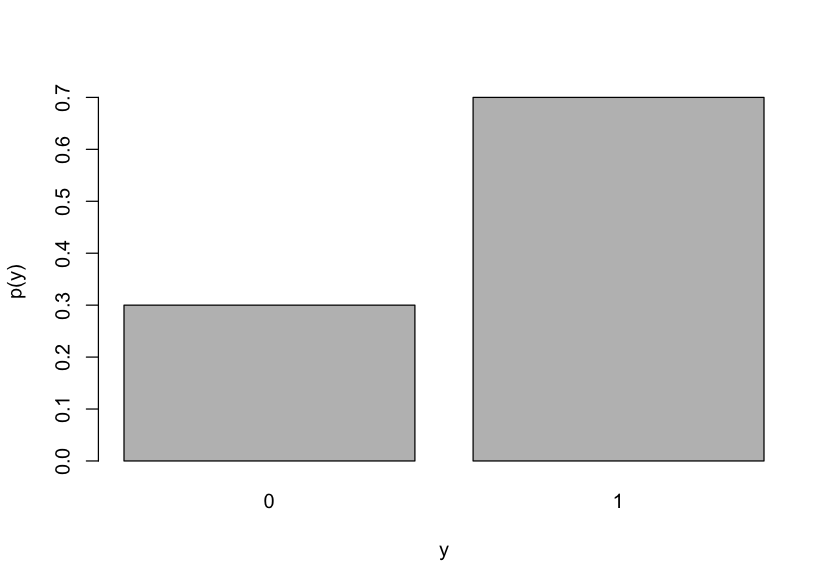
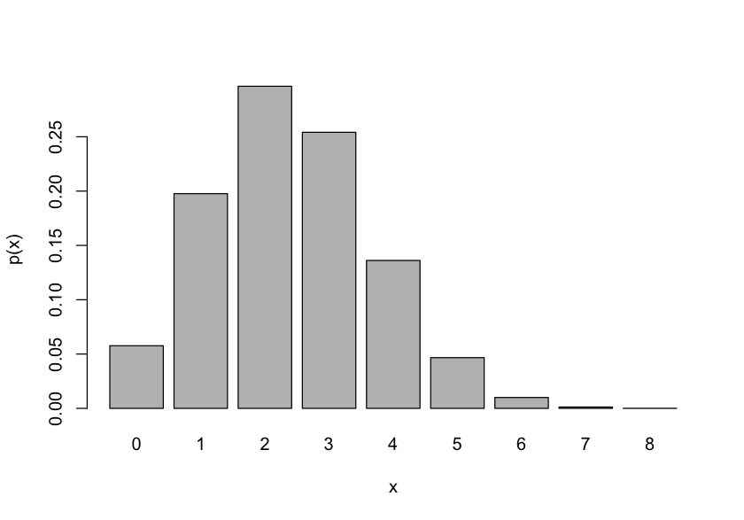
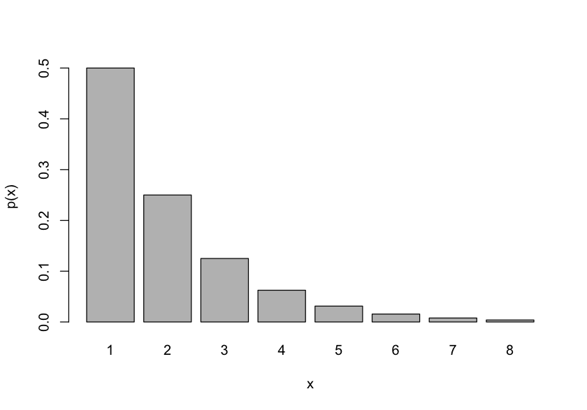
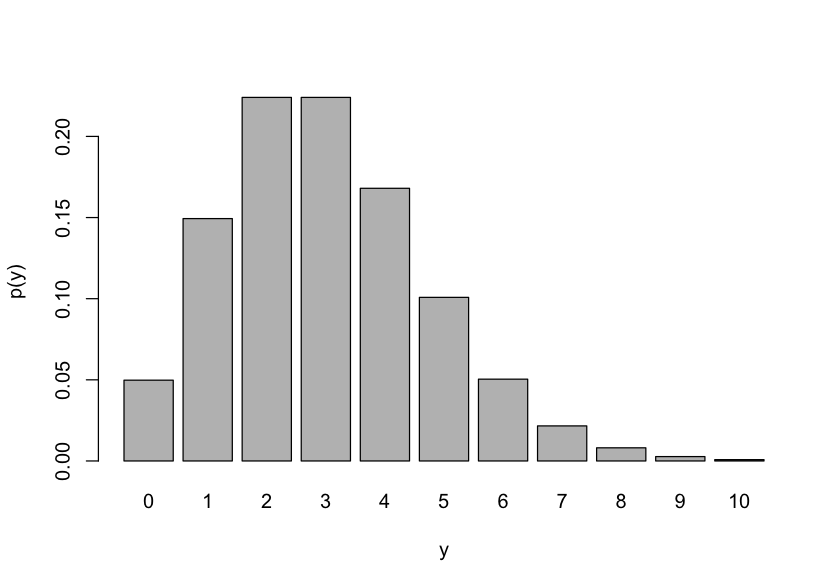
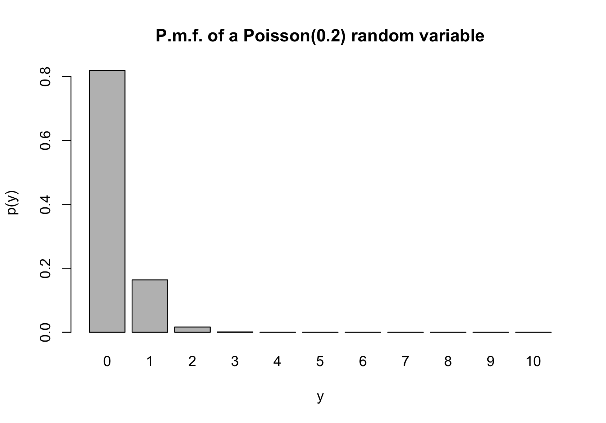
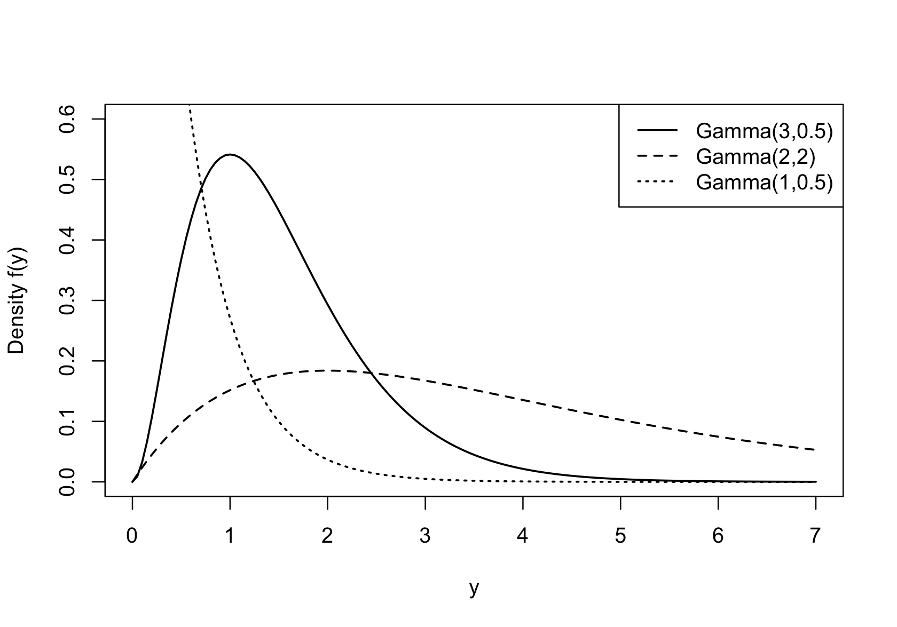
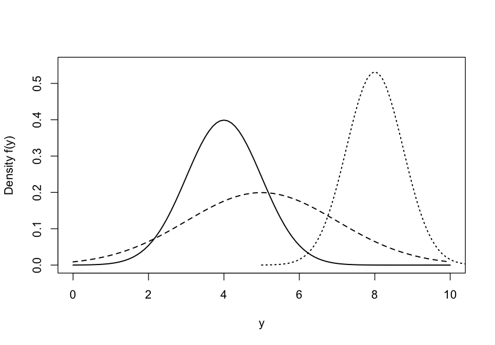
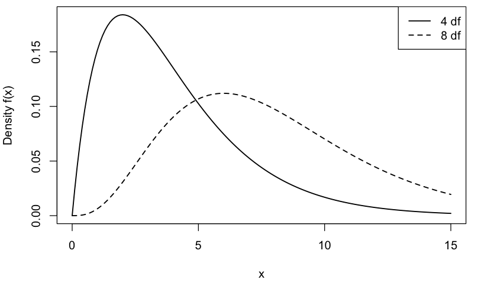
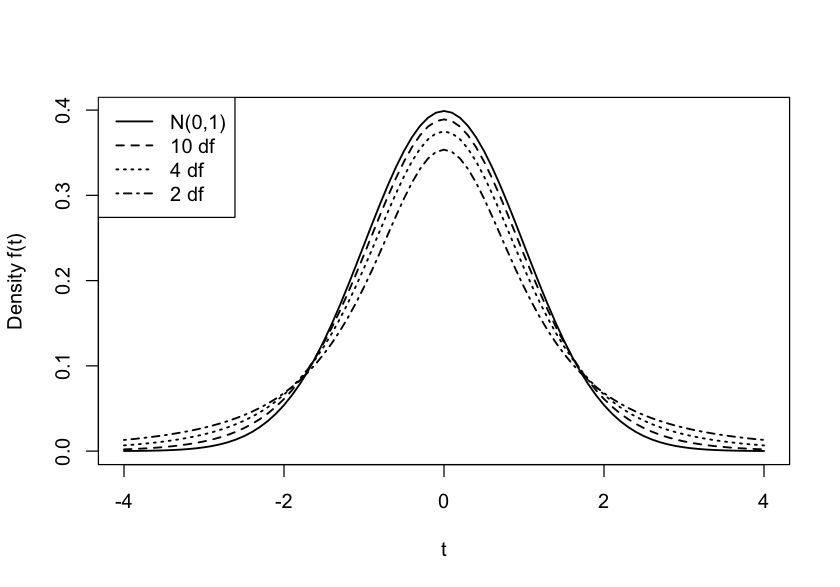
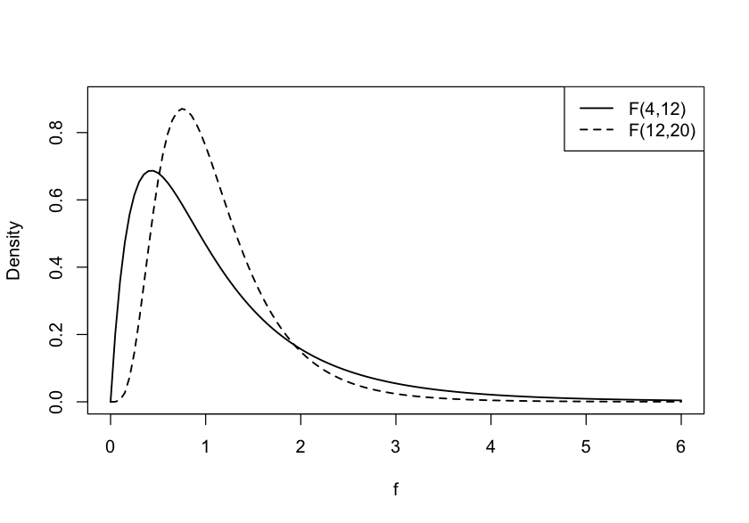

13 Probability and Statistics
This chapter covers some basic topics in mathematical statistics that are relevant to understanding data science methodology related to modeling data. The topics are considered more review than exposition and are brought together here as a reference.
13.1 Probability
Data are not deterministic; they have an element of uncertainty. Measurement errors, sampling variability, random assignment and selection, incomplete observation, are just some sources of random variability found in data. A solid understanding of probability concepts is necessary for any data professional. To separate signal from noise in data means separating systematic from random effects; to make statements about data requires the quantification of uncertainty.
Situations in which the outcomes occur randomly are called generically experiments and probability theory is used to model such experiments.
Sample Space and Events
The sample space, denoted \(\Omega\), is the set of all possible outcomes of the experiment. If we model the number of calls queued in a customer service hotline as random, the sample space is the set of non-negative integers, \(\Omega = \{ 0,\ 1,\ 2,\cdots,n\}\). On my way to work I pass through two traffic lights that are either red \((r)\), yellow \((y)\), or green \((g)\)at the time I reach the light. The sample space is the set of all possible light combinations:
\[\Omega = \left\{ rr,ry,rg,yr,yy,yg,gr,gy,gg \right\}\]
An event is a subset of a sample space, denoted with uppercase letters. The event that less than 3 calls are queued is \(A = \{ 0,\ 1,\ 2\}\). The event that both lights are green is \(A = \left\{ gg \right\}\).
Consider two events, \(A\) and \(B\). We can construct other events from \(A\) and \(B\). The union of the events, \(A \cup B\), is the event that \(A\) occurs or \(B\) occurs or both occur. The intersection of \(A\) and \(B\), denoted \(A \cap B\), is the event that both \(A\) and \(B\) occur. The complement of event \(A\), denoted \(A^{c}\), consists of all events in \(\Omega\) that are not in \(A\).
Suppose \(B\) is the event that exactly one light is green in the traffic example, \(B = \left\{ rg,yg,gr,gy \right\}\). Then
\[A \cup B = \left\{ gg,rg,yg,gr,gy \right\}\]
\[A \cap B = \varnothing\]
\[B^{c} = \left\{ rr,ry,yr,yy,gg \right\}\]
The intersection of \(A\) and \(B\) in this example is the empty set \(\varnothing\), the set without elements. \(A\) and \(B\) are said to be disjoint events.
Set theory teaches us about laws involving events.
| Law | |
|---|---|
| Commutative | \(A \cup B = B \cup A\) |
| \(A \cap B = B \cap A\) | |
| Associative | \((A \cup B) \cup C = A \cup (B \cup C)\) |
| \((A \cap B) \cap C = A \cap (B \cap C)\) | |
| Distributive | \((A \cup B) \cap C = (A \cap C) \cup (B \cap C)\) |
| \((A \cap B) \cup C = (A \cup C) \cap (B \cup C)\) | |
| De Morgan’s | \((A \cup B)^{c} = A^{c} \cap B^{c}\) |
| \((A \cap B)^{c} = A^{c} \cup B^{c}\) |
Probability Measures
Properties
A probability measure is a function \(\Pr( \cdot )\) that maps from subsets of a sample space \(\Omega\) (from events) to real numbers between \(0\) and \(1\). We have the following axioms and properties:
\(\Pr{(\Omega) = 1}\)
\(\Pr{\left( A^{c}\ \right) = 1 - \Pr(A)}\)
\(\Pr{(A \cup B) = \Pr{(A) + \Pr{(B) + \Pr(A \cap B)}}}\)
If \(A\) is a subset of \(\Omega\), denoted \(A \subset \Omega\), then \(\Pr{(A) \geq 0}\)
If \(A\) and \(B\) are disjoint, then \(\Pr{(A \cup B) = \Pr{(A) + \Pr(B)}}\)
If \(A\) and \(B\) are disjoint, then \(\Pr{(A \cap B) = 0}\)
If \(A_{1},\cdots,A_{n}\) are mutually disjoint events, then \(\Pr{\left( \bigcup_{i = 1}^{n}A_{i} \right) = \sum_{i = 1}^{n}{\Pr\left( A_{i} \right)}}\)
\(\Pr{(\varnothing) = 0}\)
Conditional probability
The conditional probability that event \(A\) occurs given that event \(B\) has occurred is
\[\Pr{\left( A|B \right) = \frac{\Pr(A \cap B)}{\Pr(B)}}\]
This requires that \(\Pr{(B) > 0}\), we cannot condition on something that has zero probability of happening. The idea of the conditional probability is that for purpose of conditioning on \(B\), we change the relevant sample space from \(\Omega\) to \(B\).
Rearranging the probabilities in this expression, we find that the probability that two events occur together (the events intersect) can be written as
\[\Pr(A \cap B) = \Pr{\left( A|B \right) \times \Pr(B)}\]
This is known as the multiplication law of probabilities. Another way of putting this result is that the joint probability of \(A\) and \(B\) is the product of the conditional probability given \(B\) and the marginal probability of \(B\). If \(\Pr{(A) > 0}\), we can also use \(A\) to condition the calculation:
\[\Pr(A \cap B) = \Pr{\left( B|A \right) \times \Pr(A)}\]
Suppose that the probability of rain \((A)\) on a cloudy \((B)\) day is \(\Pr{\left( A|B \right) = 0.3}\). The probability that it is cloudy is \(\Pr(B) = 0.2\). The probability that it is cloudy and raining is \(\Pr{\left( A|B \right) \times \Pr(B)} = 0.3 \times 0.2 = 0.06\). Notice the difference between the event cloudy and raining and the event raining given that it is cloudy.
Law of total probability
Suppose we divide the sample space into two disjoint events, \(B\) and \(B^{c}\). Then the probability that \(A\) occurs can be decomposed as
\[\Pr{(A) = \Pr{(A \cap B) + \Pr\left( A \cap B^{c} \right)}}\]
Substituting the conditional and marginal probabilities this can be rewritten as
\[\Pr{(A) = \Pr{\left( A|B \right)\Pr(B) + \Pr{\left( A|B^{c} \right)\Pr\left( B^{c} \right)}}}\]
Each of the products on the right-hand side conditions on a different sample space, but since \(B\) and \(B^{c}\) are disjoint, the entire space \(\Omega\) is covered. For example, the probability that it snows in Virginia is the sum of the probabilities that it snows in Montgomery County and that it snows in the other counties of the state.
We can extend the decomposition from two disjoint sets to any number of disjoint sets. If \(B_{1},\cdots,\ B_{n}\) are disjoint sets and \(\bigcup_{i = 1}^{n}B_{i} = \Omega\), and all $\Pr{\left( B_{i} \right) > 0},\ $then
\[\Pr(A) = \sum_{i = 1}^{n}{\Pr{\left( A|B_{i} \right)\Pr\left( B_{i} \right)}}\]
Bayes’ rule
What is known as the Bayes rule, named after English mathematician Thomas Bayes, is on the surface another way of expressing conditional probabilities. Recall the definition of the conditional probability,
\[\Pr{\left( A|B \right) = \frac{\Pr(A \cap B)}{\Pr(B)}}\]
The numerator, the probability that events \(A\) and \(B\) occur together, can be written in terms of a conditional probability as well, \(\Pr(A \cap B) = \Pr{\left( B|A \right)\Pr(A)}\). Combining the two results yields Bayes’ rule:
\[\Pr\left( A|B \right) = \frac{\Pr{\left( B|A \right)\Pr(A)}}{\Pr(B)}\]
The conditional probability on the left-hand side, \(\Pr\left( A|B \right)\), is called the posterior} probability. The marginal probabilities \(\Pr(A)\) and \(\Pr(B)\) are also called the prior** probabilities. The Bayes rule allows us to express the probability of \(A|B\) as a function of the probability of \(B|A\) and vice versa.
\[\Pr\left( A|B \right) = \frac{\Pr{\left( B|A \right)\Pr(A)}}{\Pr(B)}\]
\[\Pr\left( B|A \right) = \frac{\Pr{\left( A|B\ \right)\Pr(B)}}{\Pr(A)}\]
You can combine Bayes’ formula as given here with the law of total probability to compute the marginal probability in the denominator. This makes it even more evident how Bayes’ rule allows us to reverse the conditioning:
\[\Pr{\left( B_{j}|A \right) =}\frac{\Pr\left( A|B_{j} \right)\Pr\left( B_{j} \right)}{\sum_{i = 1}^{n}{\Pr\left( A|B_{i} \right)\Pr\left( B_{i} \right)}}\]
Example: Lie Detector Test
A lie detector test returns two possible readings, a positive reading \(( \oplus )\) that the subject is lying, or a negative reading \(( \ominus )\) that the subject is telling the truth. The subject of the test is indeed lying \((L)\) or is indeed telling the truth \((T)\).
We can construct from this a number of events:
\(\oplus |\ L\): the polygraph indicates the subject is lying and they are indeed lying.
\(\oplus |T\): the polygraph indicates the subject is lying and they are telling the truth.
\(\ominus |L\): the polygraph indicates the subject is telling the truth when they are lying.
\(T\): the test subject is telling the truth.
\(L\): the test subject is lying.
Suppose that we know \(\Pr\left( \oplus |L \right) = 0.88\) and thus \(\Pr\left( \ominus |\ L \right) = 0.12\). The first probability is the true positive rate of the device. If a person is lying, the probability that the polygraph detects it is 0.88. Similarly, assume we know that the true negative rate, the probability that the lie detector indicates someone is telling the truth when they are indeed truthful, is \(\Pr{\left( \ominus |T \right) = 0.86}.\)
If we know the marginal (prior) probabilities that someone is telling the truth on a particular question, say, \(\Pr{(T) = 0.99}\), then we can use Bayes’ rule to ask the question: What is the probability the person is telling the truth when the polygraph says that they are lying, \(\Pr{(T| \oplus )}\):
\[\Pr{\left( T \middle| \oplus \right) = \frac{\Pr{\left( \oplus |T \right)\Pr(T)}}{\Pr{\left( \oplus |T \right)\Pr(T)} + \Pr{\left( \oplus |L \right)\Pr(L)}}} = \frac{0.14 \times \ 0.99}{0.14 \times 0.99 + 0.88 \times .01} = 0.94\]
Despite the relatively large true positive and true negative rates, 94% of all positive readings will be incorrect—the subject answered truthfully. If the probability that someone lies on a particular question is \(\Pr{(T) = 0.5}\), the chance of a polygraph to indict the innocent is much smaller:
\[\Pr\left( T \middle| \oplus \right) = \frac{0.14 \times \ 0.5}{0.14 \times 0.5 + 0.88 \times 0.5} = 0.13\]
Independence
Independent and disjoint events are different concepts. Events \(A\) and \(B\) are disjoint if they cannot occur together. Their intersection is the empty set and thus \(\Pr{(A \cap B) = \Pr{(\varnothing) = 0}}\). Independent events are unrelated events, that means the outcome of one event does not affect the outcome of the other event—the events can occur together, however.
Being a sophomore, junior, or senior student are disjoint events; you cannot be simultaneously a junior and a senior. On the other hand, the events rain in Virginia'' andwinning the lottery ticket’’ are independent; they can occur together but whether it rains has no bearing on whether you win the lottery that day and winning the lottery has no effect on the weather.
Formally, \(A\) and \(B\) are independent events if \(\Pr(A \cap B) = \Pr(A){\times Pr}(B)\). This should make intuitive sense: if knowing \(A\) carries no information about the occurrence of \(B\), then the probability that they occur together is the product of the probabilities that they occur separately.
Applying this to the definition of the conditional probability, the following holds for two independent events:
\[\Pr\left( A|B \right) = \frac{\Pr(A \cap B)}{\Pr(B)} = \frac{\Pr{(A)\Pr(B)}}{\Pr(B)} = \Pr(A)\]
In other words, when \(A\) and \(B\) are independent, the conditional probability equals the marginal probability—the occurrence of \(B\) does not alter the probability of \(A\).
Random Variables
Random variables are real-valued functions defined on sample spaces. Recall the sample space of the traffic lights encountered on the way to work:
\[\Omega = \left\{ rr,ry,rg,yr,yy,yg,gr,gy,gg \right\}\]
\(X\), the number of green lights is a random variable. \(X\) is a discrete random variable since it can take on a countable number of values, \(X = 0,\ 1,\ 2\). If the nine traffic light configurations in \(\Omega\) are equally likely, then the values of \(X\) occur with probabilities
\[\Pr(X = 0) = \frac{4}{9}\]
\[\Pr(X = 1) = \frac{4}{9}\]
\[\Pr(X = 2) = \frac{1}{9}\]
Distribution functions
The function \(p(x) = \Pr(X = x)\), that assigns probabilities to the discrete values of the random variable, is known as the probability mass function (p.m.f.). The possible values the random variable can take on are called its support. Discrete random variables can have infinitely large support when there is no limit, for example the number of coin tosses until 5 heads are observed has support \(5,\ 6,\ 7,\ \cdots\). The number of fish caught in a day at a lake has infinite support \(0,\ 1,\ 2,\ \cdots\); it might be highly unlikely to catch 1,000 fish per day, but it is not impossible.
If the number of possible values is not countable, the random variable is called continuous. The concept of a probability mass function then does not make sense. Instead, continuous random variables are characterized by their probability density function (p.d.f., \(f(x)\)). Probabilities for continuous random variables are calculated by integrating the p.d.f.:
\[\Pr(a < X < b) = \int_{a}^{b}{f(x)\ dx}\]
The cumulative distribution function (c.d.f., \(F(x)\) is defined for any random variable as
\[F(x) = \Pr{(X \leq x)}\]
In the case of a discrete random variable, this means summing the probabilities on the support up to and including \(x\):
\[F(x) = \sum_{X:X \leq x}^{}{p(x)}\]
For a continuous random variable, the c.d.f. is the integral up to \(x\):
\[F(x) = \int_{- \infty}^{x}{f(x)\ dx}\]
The \(p\)th quantile of a distribution is the value \(x_{p}\) for which \(F\left( x_{p} \right) = p\). For example, the 0.85th quantile—also called the 85th percentile—is \(x_{.85}\) and satisfies \(F\left( x_{.85} \right) = 0.85\). Special quantiles are obtained for \(p = 0.25\), the first quartile, \(p = 0.5\), the median (second quartile), and \(p = 0.75\), the third quartile.
Expected value
The expected value of a random variable, \(\text{E}\lbrack X\rbrack\), also known as the mean of \(X\), is the weighted average of the values of the random variable weighted by the mass or density. For a discrete random variable,
\[\text{E}\lbrack X\rbrack = \sum_{}^{}{x\ p(x)}\]
and for a continuous random variable,
\[\text{E}\lbrack X\rbrack = \int_{}^{}{x\ f(x)\ dx}\]
Technically, we need the conditions \(\sum |x|p(x) < \infty\) and \(\int|x|f(x)dx < \infty\), respectively, for the expected values to be defined. Almost all random variables satisfy this condition. A famous example to the contrary is the ratio of two normal distributions with mean zero, known as the Cauchy distribution—its mean (and variance) are not defined.
We can think of the expected value as the center of mass of the distribution function (density or mass function), the point on which the distribution balances.
The Greek symbol \(\mu\) is often used to denote the expected value of a random variable.
Randomness is contagious—a function of a random variable is a random variable. So, if \(X\) is a random variable, the function \(h(X)\) is a random variable as well. We can find the expected value of \(h(X)\) through the mass or density function of \(X\):
\[\text{E}\left\lbrack h(X) \right\rbrack = \sum_{x}^{}{h(x)p(x)}\]
\[\text{E}\left\lbrack h(X) \right\rbrack = \int_{- \infty}^{\infty}{h(x)f(x)dx}\]
Note that the sum and interval are taken over the support of \(X\), rather than \(h(X)\). You can also compute the expected value over the support of \(h(X)\), but then values of \(h(x)\) need to be weighted with the probabilities (or densities) of \(h(X)\).
An important case of the expectation of a function is \(Y\) as a linear combination of \(X\): \(Y = aX + b\):
\[\text{E}\lbrack Y\rbrack = \text{E}\lbrack aX + b\rbrack = a\text{E}\lbrack X\rbrack + b\]
The expected value is a linear operator. For \(k\) random variables \(X_{1},\cdots,\ X_{k}\) and constants \(a_{1},\cdots,a_{k}\),
\[\text{E}\left\lbrack a_{1}X_{1} + a_{2}X_{2} + \cdots + a_{k}X_{k} \right\rbrack = a_{1}\text{E}\left\lbrack X_{1} \right\rbrack + a_{2}\text{E}\left\lbrack X_{2} \right\rbrack + \cdots + a_{k}\text{E}\lbrack X_{k}\rbrack\]
Example: Mean of Binomial Distribution
A random variable \(X\) with binomial distribution has p.m.f.
\[\Pr(X = x) = \begin{pmatrix} n \\ x \end{pmatrix}\pi^{x}(1 - \pi)^{n - x}\]
The support of \(X\) is \(0,\ 1,\ 2,\ \cdots,\ n\). The term \(\begin{pmatrix} n \\ x \end{pmatrix}\) is known as the binomial coefficient,
\[\begin{pmatrix} n \\ x \end{pmatrix} = \frac{n!}{x!(n - x)!}\]
The binomial random variable is the sum of \(n\) independent Bernoulli experiments. A Bernoulli experiment can result in only two possible outcomes that occur with probabilities \(\pi\) and \(1 - \pi\).
Computing the expected value of the binomial random variable from the p.m.f. is messy, it requires evaluation of
\[\text{E}\lbrack X\rbrack = \sum_{x = 0}^{n}{\begin{pmatrix} n \\ x \end{pmatrix}x{\ \pi}^{x}}\ (1 - \pi)^{n - x}\]
If we recognize the binomial random variable \(X\) as the sum of \(n\) Bernoulli variables \(Y_{1},\cdots,Y_{n}\) with probability \(\pi\), the expected value follows as
\[\text{E}\lbrack X\rbrack = \text{E}\left\lbrack \sum Y_{i} \right\rbrack = \sum \text{E}\left\lbrack Y_{i} \right\rbrack = n\pi\]
Variance and standard deviation
Next to the mean, the most important expected value of a random variable, is the variance, the expected value of the squared deviation of a random variable from its mean:
\[\text{Var}\lbrack X\rbrack = \text{E}\left\lbrack \left( X - \text{E}\lbrack X\rbrack \right)^{2} \right\rbrack = \text{E}\left\lbrack X^{2} \right\rbrack -\text{E}\lbrack X\rbrack^{2}\]
The second expression states that the variance can also be written as the difference of the mean of the square of the random variable and the square of the mean of the random variable. The Greek symbol \(\sigma^{2}\) is commonly used to denote the variance. The square is useful to remind us that the variance is in squared units. If the random variable \(X\) is a length in feet, the variance represents an area in square feet.
The square root of the variance is called the standard deviation of the random variable, frequently denoted \(\sigma\). The standard deviation is measured in the same units as \(X\).
From the definition of expected values and functions of random values, the variance can be calculated from first principles as the expected value of \((X - \mu)^{2}\), where \(\mu = E\lbrack X\rbrack:\)
\[\text{Var}\lbrack X\rbrack = \sum_{x}^{}(x - \mu)^{2}p(x)\]
\[\text{Var}\lbrack X\rbrack = \int_{- \infty}^{\infty}{(x - \mu)^2 \, f(x)dx} \]
It is often easier to derive the variance of a random variable from the following properties. Suppose \(a\) and \(b\) are constants and \(X\) is a random variable with variance \(\sigma^{2}\)
\(\text{Var}\lbrack a\rbrack = 0\)
\(\text{Var}\lbrack X + b\rbrack = \sigma^2\)
\(\text{Var}\lbrack aX\rbrack = a^2\sigma^2\)
\(\text{Var}\lbrack aX + b\rbrack = a^2\sigma^2\)
The first property states that constants have no variability—this should make sense. A constant is equal to its expected value, \(\text{E}\lbrack a\rbrack = a\), so that deviations between value and mean are always 0.
The second property states that shifting a random variable by a fixed amount does not change its dispersion. That also should make intuitive sense: adding (or subtracting) a constant amount from every value does not change the shape of the distribution, it simply moves the distribution to a different location—the mean changes but the variance does not.
The third property states that scaling a random variable with constant \(a\) has a squared effect on the variance. This is also intuitive since the variance is in squared units. The effect of scaling on the standard deviation is linear: If you multiply every value with the constant \(a\), the standard deviation of the product increases by factor \(a\).
The fourth property simply combines properties 1 and 3.
The following result plays an important role in deriving the variance of linear functions of random variables. Many statistical estimators are of this form, from the sample mean to least-squares regression estimators.
If \(X_{1},\cdots,X_{k}\) are independent random variables and \(a_{1},\cdots,a_{k}\) are constants, then the variance of \(a_{1}X_{1} + \cdots + a_{k}X_{k}\) is given by
\[\text{Var}\left\lbrack a_{1}X_{1} + \cdots + a_{k}X_{k} \right\rbrack = a_{1}^{2}\text{Var}\left\lbrack X_{1} \right\rbrack + a_{2}^{2}\text{Var}\left\lbrack X_{2} \right\rbrack + \cdots + a_{k}^{2}\text{Var}\lbrack X_{k}\rbrack\]
For this result to hold it is sufficient that the \(X_i\) are uncorrelated, they do not have to be independent.
Example: Variance of Binomial Distribution
We saw earlier that the sum of \(n\) independent Bernoulli random variables with probability \(\pi\) is a Binomial random variable. A Bernoulli(\(\pi\)) random variable \(Y_i\) takes on values 1 and 0 with p.m.f.
\[\Pr\left( Y_{i} = 1 \right) = \pi\]
\[\Pr\left( Y_{i} = 0 \right) = 1 - \pi\]
The mean and variance of \(Y\) are \(E\left\lbrack Y_{i} \right\rbrack = \pi\) and \(Var\left\lbrack Y_{i} \right\rbrack = \pi(1 - \pi)\), respectively.
Since \(X = \sum_{i = 1}^{n}Y_{i}\) and the \(Y_{i}\)s are independent,
\[\text{Var}\lbrack X\rbrack = \sum_{i = 1}^{n}{\text{Var}\left\lbrack Y_{i} \right\rbrack} = n\pi(1 - \pi)\]
We can also apply these results to derive the variance of the sample mean.
Example: Variance of the Sample Mean
Suppose that \(Y_1, \cdots, Y_n\) are a random sample from a distribution with mean \(\mu\) and variance \(\sigma^2\). What is the variance of the sample mean \(\overline{Y} = \frac{1}{n}\sum_{i=1}^n Y_i\)?
The sample mean is the sum of the \(Y_i\)s, divided by the sample size \(n\). By virtue of drawing a random sample, independence of the \(Y_i\) is guaranteed. We can thus apply the results about the variance of a sum of independent random variables and about the variance of a scaled random variable: \[ \begin{align*} \text{Var}[\overline{Y}] &= \text{Var}\left[ \frac{1}{n}\sum_{i=1}^n Y_i\right] \\ &= \frac{1}{n^2}\text{Var}\left[\sum_{i=1}^n Y_i\right] \\ &= \frac{1}{n^2}\sum_{i=1}^n \text{Var}[Y_i] \\ &= \frac{1}{n^2} n \sigma^2 = \frac{\sigma^2}{n} \end{align*} \]
It is sufficient for this result to hold that the random variables are mutually uncorrelated, a weaker condition than mutual independence. We are introducing independence below after discussing the concept of joint distribution functions.
Centering and Scaling
A random variable \(X\) with mean \(\mu\) and variance \(\sigma^{2}\) is centered by subtracting its mean. A random variable is scaled by multiplying or dividing it by a factor. A random variable is standardized by centering and dividing by its standard deviation:
\[Y = \frac{X - \mu}{\sigma}\]
If \(X\) has mean \(\mu\) and variance \(\sigma^2\), then \(Y\) has mean 0 and variance 1. This follows by applying the properties of the expecation and variance operators: \[ \begin{align*} \text{E}[Y] &= \text{E}\left[\frac{X-\mu}{\sigma}\right] = \frac{1}{\sigma}\text{E}[X-\mu] =\frac{1}{\sigma}(\mu-\mu) = 0\\ \text{Var}[Y] &= \text{Var}\left[\frac{X-\mu}{\sigma}\right] = \frac{1}{\sigma^2}\text{Var}[X-\mu] = \frac{1}{\sigma^2}\text{Var}[X] = \frac{\sigma^2}{\sigma^2} =1 \end{align*} \]
It is also called the centered-and-scaled version of \(X\).
A special type of scaling is range scaling. This form of scaling of the data transforms the data so it falls between a known lower and upper bound, often 0 and 1. Suppose that \(\text{min}(X) \le X \le \text{max}(X)\) and we want to create a variable \(z_\text{min} \le Z \le z_\text{max}\) from \(X\). \(Z\) can be computed by scaling and shifting a standardized form of \(X\): \[ \begin{align*} x^* &= \frac{x-\min(x)}{\max(x)-\min(x)} \\ z &= z_{\text{min}} + x^* \times (z_{\text{max}} - z_{\text{min}}) \end{align*} \] If the bounds are \(z_{\text{min}} = 0\) and \(z_{\text{max}} = 1\), then \(z = x^*\).
Technically, scaling refers to multiplication of a variable with a factor. Because standardization involves centering and scaling, and standardization is used frequently, you will find the term scaling applied to standardization. In fact, the scale function in R performs standardization (centering and scaling) by default.
Covariance and correlation
Whereas the variance measures the dispersion of a random variable, the covariance measures how two random variables vary together. The covariance of \(X\) and \(Y\) is the expected value of the cross-product of two variables centered around their respective means, \(\mu_{X}\) and \(\mu_{Y}\):
\[\text{Cov}\lbrack X,Y\rbrack = \text{E}\left\lbrack \left( X - \mu_{X} \right)\left( Y - \mu_{Y} \right) \right\rbrack = \text{E}\lbrack XY\rbrack - \mu_{X}\mu_{Y}\]
Similar to the variance, the covariance has properties that come in handy when working with random variables:
\(\text{Cov}\lbrack X,a\rbrack = 0\)
\(\text{Cov}\lbrack X,X\rbrack = \text{Var}\lbrack X\rbrack\)
\(\text{Cov}\lbrack aX,bY\rbrack = ab \text{Cov}\lbrack X,Y\rbrack\)
\(\text{Cov}\lbrack aY + bU,cW + dV\rbrack = ac \text{Cov}\lbrack Y,W\rbrack + bc \text{Cov}\lbrack U,W\rbrack + ad \text{Cov}\lbrack Y,V\rbrack + bd \text{Cov}\lbrack U,V\rbrack\)
Since the variance is a special case of the covariance of a random variable with itself, the properties of the covariance operator are general cases of the properties of the variance operator discussed earlier.
Earlier we gave an expression for the variance of a linear combination of independent random variables. We can now generalize the result to linear combinations of correlated random variables.
If \(X\) and \(Y\) are random variables with variance \(\sigma_{X}^{2}\) and \(\sigma_{Y}^{2}\), respectively, and \(a, b\) are constants, then
\[ \begin{align*} \text{Var}\lbrack aX + bY\rbrack &= \text{Var}\lbrack aX\rbrack + \text{Var}\lbrack bY\rbrack + \text{Cov}\lbrack aX,bY\rbrack \\ &= a^{2}\sigma_{X}^{2} + b^{2}\sigma_{Y}^{2} + ab \text{Cov}\lbrack X,Y\rbrack \end{align*} \]
If \(\text{Cov}\lbrack X,Y\rbrack = 0\), the random variables \(X\) and \(Y\) are uncorrelated. The correlation between \(X\) and \(Y\) is defined as
\[\text{Corr}\lbrack X,Y\rbrack = \frac{\text{Cov}\lbrack X,Y\rbrack}{\sigma_{X}\sigma_{Y}}\]
The correlation is often denoted \(\rho_{XY}\) and takes on values \(-1 \leq \rho_{XY} \leq 1\). A zero correlation is a weaker condition than independence of \(X\) and \(Y\). A positive value of \(\rho_{XY}\) means that an increase in the value of \(X\) is associated with an increase in the value of \(Y\). Note that we are not stating that the increase in \(X\) is caused by the increase in \(Y\). Correlation is a measure of association and does not imply causation.
If \(\text{Corr}[X,Y] = 1\) or \(\text{Corr}[X,Y] = -1\), then \(X\) can be predicted perfectly from \(Y\); knowing \(Y\) is equal to knowing \(X\). An example of a perfect positive correlation is when \(X\) is a length measured in inches and \(Y\) is measured in cm. When \(\text{Corr}[X,Y] = 0\), then \(X\) carries no information about \(Y\), and vice versa. A person’s shoe size and tomorrow’s weather is an example of uncorrelated variables.
Independence
The joint behavior of random variables \(X\) and \(Y\) is described by their joint cumulative distribution function,
\[F(x,y) = \Pr(X \leq x,Y \leq y)\]
If \(X\) and \(Y\) are continuous, this probability is calculated as
\[F(x,y) = \int_{- \infty}^{x}{\int_{- \infty}^{y}{f(u,v)\ dvdu}}\]
The bivariate probability density is derived from \(F(x,y)\) by differentiating,
\[f(x,y) = \frac{\partial^{2}}{\partial x\partial y}F(x,y)\]
Two random variables \(X\) and \(Y\) are independent if their joint c.d.f.s (or joint p.d.f.s) factor into the marginal distributions. The marginal density function of \(X\) or \(Y\) can be derived from the joint density by integrating over the other random variable:
\[f_{X}(x) = \int_{- \infty}^{\infty}{f(x,y)dy}\]
\[f_{Y}(y) = \int_{- \infty}^{\infty}{f(x,y)dx}\]
Finally, we can state that \(X\) and \(Y\) are independent if \(f(x,y) = f_{X}(x)f_{Y}(y)\) (or \(F(x,y) = F_{X}(x)F_{Y}(y)\)).
If \(X\) and \(Y\) are independent, then
\[\text{E}\left\lbrack g(X)h(Y) \right\rbrack = \text{E}\left\lbrack g(X) \right\rbrack \text{E}\left\lbrack h(Y) \right\rbrack\]
For example, \(\text{E}\lbrack XY\rbrack = \text{E}\lbrack X\rbrack \text{E}\lbrack Y\rbrack\) and it follows that the covariance between independent random variables is zero. That is, independent random variables are uncorrelated. The reverse does not have to be true. Lack of correlation (a zero covariance) does not imply independence.
Before we dive into some important discrete and continuous distributions in statistics, I want to point you at a remarkable website, called the Probability Playground, created by Adam Cunningham at the University of Buffalo. The site was featured in an article in the September 2024 issue of Amstat News (Cunningham 2024).
This is an interactive site where you can see the relationships between probability distributions (on the Map) and explore the distributions. You can study visually their properties such as convergence to other distributions, their shapes, the effects of their parameters, and even simulate them.
Spending a few minutes on the Probability Playground will deepen your understanding of any distribution and see how distributions are connected with each other. And you can see how means and variances are derived from first principles.
13.2 Discrete (Univariate) Distributions
Bernoulli (Binary), Bernoulli\((\pi)\)
A Bernoulli (or binary) experiment has two possible outcomes that occur with probabilities \(\pi\) and \(1 - \pi\), respectively. The outcomes are coded numerically as \(Y = 1\) (with probability \(\pi\)) and \(Y = 0\), the subset of the sample space \(\Omega\) that maps to \(Y = 1\) is often called the “event” or the “success” outcome of the binary distribution, the complement is called the “non-event” or the “failure” outcome.
For example, in the traffic light example the sample space is
\[\Omega = \left\{ rr,ry,rg,yr,yy,yg,gr,gy,gg \right\}\]
A binary random variable can be defined as \(Y = 1\) if the first light is green. In other words, the event \(A = \{ gr,gy,gg\}\) maps to \(Y = 1\) and the complement \(A^{c}\) maps to \(Y = 0\). The p.m.f of the random variable is then given by the Bernoulli(\(\pi\)) distribution as
\[p(y) = \left\{ \begin{matrix} \pi & Y = 1 \\ 1 - \pi & Y = 0 \end{matrix} \right.\ \]
Since binary data are often found in studies where events are detrimental—e.g., disease, fraud, death, disapproval—the “event” vernacular is preferred over the “success” vernacular.
The mean and variance of the Bernoulli(\(\pi\)) random variable are \(\pi\) and \(\pi(1 - \pi)\), respectively. Notice that the variance is largest at \(\pi = 0.5\), when there is greatest uncertainty about which of the two events will occur.

Binomial, Binomial\((n,\pi)\)
Let \(Y_{1},\cdots,Y_{n}\) be independent binary experiments with the same event probability \(\pi\). Then \(X = \sum_{i = 1}^{n}Y_{i}\) has a Binomial(\(n,\pi\)) distribution with p.m.f.
\[\Pr(X = x) = \begin{pmatrix} n \\ x \end{pmatrix}\pi^{x}(1 - \pi)^{n - x},\ \ \ \ \ x = 0,1,\cdots,n\]
The mean and variance of the Binomial(\(n,\pi\)) variable can be found easily from its definition as a sum of independent Bernoulli(\(\pi\)) variables:
\[\text{E}\lbrack X\rbrack = n\pi\ \ \ \ \ \text{Var}\lbrack X\rbrack = n\pi(1 - \pi)\]

The Bernoulli(\(\pi\)) distribution is the special case of the Binomial(\(1,\pi\)) distribution.
Geometric, Geometric\((\pi)\)
The Binomial(\(n,\pi\)) distribution is the number of events in a series of \(n\) Bernoulli(\(\pi\)) experiments. The Geometric(\(\pi\)) distribution also can be defined in terms of independent Bernoulli(\(\pi\)) experiments as the number of trials needed to obtain the first event. There is no theoretical upper bound for the support, as you might need infinitely many binary experiments to realize one event.
The p.m.f. of a Geometric(\(\pi\)) random variable, and its mean and variance, are given by
\[p(x) = \pi(1 - \pi)^{x - 1}\ \ \ \ \ \ x = 1,2,\cdots\]
\[\text{E}\lbrack X\rbrack = \frac{1}{\pi}\ \ \ \ \ \text{Var}\lbrack X\rbrack = \frac{1 - \pi}{\pi^{2}}\]
The following figure shows the p.m.f. of a Geometric(0.5) distribution. The probability to observe an event on the first try is 1/2, on the second try is 1/4, on the third try is 1/8, and so forth.
An interesting property of Geometric(\(\pi\)) random variables is their lack of memory:
\[\Pr\left( X > s + t|X > t \right) = \Pr(X > s)\]
The probability that we have to try \(s\) more times to see the first event is independent of how many times we have tried before (\(t\)). To prove this note that \(\Pr(X > s)\) means the first event occurs after the \(s\)th try which implies that the first \(s\) tries were all non-events: \(\Pr{(X > s) = (1 - \pi)^{s}}\). The conditional probability in question becomes
\[\Pr\left( X > s + t|X > t \right) = \frac{\Pr{(X > s + t,\ X > t)}}{\Pr{(X > t)}} = \frac{\Pr{(X > s + t)}}{\Pr{(X > t)}} = \frac{(1 - \pi)^{s + t}}{(1 - \pi)^{t}} = (1 - \pi)^{s}\]
But the last expression is just \(\Pr{(X > s)}\).

Please note that there is a second definition of the Geometric(\(\pi\)) distribution in terms of independent Bernoulli(\(\pi\)) experiments, namely as the number of non-events before the first event occurs. The p.m.f. of this random variable is
\[p(y) = \pi(1 - \pi)^{y}\ \ \ \ \ y = 0,1,2,\cdots\]
With mean \(\text{E}\lbrack Y\rbrack = \frac{(1 - \pi)}{\pi}\) and variance \(\text{Var}\lbrack Y\rbrack = \frac{(1 - \pi)}{\pi}^{2}\).
Negative Binomial, NegBin\((k,\pi)\)
An extension of the Geometric(\(\pi\)) distribution is the Negative Binomial (NegBin(\(k,\pi\))) distribution. In a series of independent Bernoulli(\(\pi\)) trials, the number of experiments until the \(k\)th event is observed is a NegBin(\(k,\pi\)) random variable.
A NegBin(\(k,\pi\)) random variable is thus the sum of \(k\) Geometric(\(\pi\)) random variables. The p.m.f., mean, and variance of \(X \sim NegBin(k,\pi)\) are
\[p(x) = \begin{pmatrix} x - 1 \\ k - 1 \end{pmatrix}\pi^{k}(1 - \pi)^{x - k},\ \ \ \ \ x = k,k + 1,\cdots\]
\[\text{E}\lbrack X\rbrack = \frac{k}{\pi}\ \ \ \ \ \text{Var}\lbrack X\rbrack = \frac{k(1 - \pi)}{\pi^{2}}\]
The negative binomial distribution appears in many parameterizations. A popular form is in terms of the number of non-events before the \(k\)th event occurs. This changes the support of the random variable from \(x = k,k + 1,\cdots\) to \(y = 0,1,\cdots.\) The p.m.f,. mean, and variance of that random variable are
\[p(y) = \begin{pmatrix} y + k - 1 \\ k - 1 \end{pmatrix}\pi^{k}(1 - \pi)^{y},\ \ \ \ y = 0,1,\cdots\]
\[\text{E}\lbrack Y\rbrack = \frac{k(1 - \pi)}{\pi}\ \ \ \ \text{Var}\lbrack Y\rbrack = \frac{k(1 - \pi)}{\pi^{2}}\]
The p.m.f. for a NegBin(5,0.7) in this parameterization is shown in Figure 13.1.
An important application of the negative binomial distribution is in mixing models. These are models where the parameters of a distribution are assumed to be random variables rather than constants. This mechanism introduces additional variability into the system and is applied when the observed data appear more dispersed than a distribution permits. This condition is called overdispersion. For example, a binomial random variable has variance \(n\pi(1 - \pi)\); the variability is a function of the mean \(n\pi\). When the observed data suggest that this relationship between mean and variance does not hold—and typically the observed variability is greater than the nominal variance—one can treat \(n\) or \(\pi\) as a random variable. If you assume that \(n\) follows a Poisson distribution (see next), then the marginal distribution of the data is also Poisson. If you start with a Poisson distribution and assume that its parameter follows a Gamma distribution, the resulting marginal distribution of the data is negative binomial.
Poisson, Poisson\((\lambda)\)
The Poisson distribution is a common probability model for count variables that represent counts per unit, rather than counts that can be converted to proportions. For example, the number of chocolate chips on a cookie, the number of defective parts per day on an assembly line or the number of fish caught per day can be modeled as Poisson random variables.
For the Poisson assumption to be met when modeling event counts over some unit, e.g. time, the rate at which events occur cannot depend on the occurrence of any events and events have to occur independently. For example, if the number of customer calls to a service center increases sharply after the release of a new software product, then the rate of events (calls) per day is not constant across days. This can still be modeled as a Poisson process where \(\lambda\) depends on other input variables such as the time since release of the new product. If one customer’s call makes it more likely that another customer calls into the service center, the Poisson assumption is not valid.
The random variable \(Y\) has a Poisson(\(\lambda\)) distribution if its probability mass function is given by
\[p(y) = \frac{e^{- \lambda\ }\lambda^{y}}{y!},\ \ \ \ y = 0,1,\cdots\]
The mean and variance of a Poisson(\(\lambda\)) variable are the same, \(\text{E}\lbrack Y\rbrack = \text{Var}\lbrack Y\rbrack = \lambda\). Although the random variable \(Y\) takes on only non-negative integer value, the parameter \(\lambda\) is a real number.

For larger values of \(\lambda\) the distribution shifts to the right and becomes more symmetric. For small values of \(\lambda\) the mass function is very asymmetric and concentrated at small values of \(Y\).

This is the basis for the Poisson approximation to Binomial probabilities. In a Binomial(\(n,\pi\)) process, if \(n \rightarrow \infty\) and \(\pi\) shrinks so that \(n\pi\) converges to a constant \(\lambda\), then the Binomial(\(n,\pi\)) process can be approximated as a Poisson(\(\lambda\)) process. The next figure compares a Binomial(200,0.05) mass function to the p.m.f. of the Poisson(10). At least visually, the histograms are almost indistinguishable.
For example, the probability that three sixes turn up when three dice are rolled is \(\frac{1}{216} = 0.00463\). If the three dice are rolled 200 times, what is the probability that at least one triple six shows up? If \(Y\) is the number of triple sixes out of 200, then the binomial probability is calculated as
\[1 - \begin{pmatrix} 200 \\ 0 \end{pmatrix}\left( \frac{1}{216} \right)^{0}\left( \frac{215}{216} \right)^{200} = 0.6046\]
and the Poisson approximation is
\[1 - \frac{\left( \frac{200}{216} \right)^{0}}{0!}\exp\left\{ - \frac{200}{216} \right\} = 0.6038\]
As \(\lambda \rightarrow \infty\), the Poisson p.m.f. approaches the shape of a Gaussian (normal) distribution. The normal approximation is sometimes made for sufficiently large values of the Poisson parameter, \(\lambda > 20\). Figure 13.3 shows the empirical histogram and density for 10,000 random draws from a Poisson(20) distribution and a Gaussian distribution with the same mean and variance as the Poisson. Some folks recommend the Gaussian approximation for the Poisson for \(\lambda > 100\) or even \(\lambda > 1000\).
Because the events being counted occur independently of each other, a Poisson distribution is divisible. You can think of a Poisson(\(\lambda = 5\)) variable as the sum of five Poisson(1) variables. The result of one variable producing on average 5 events per time units or five variables each producing on average one event per unit is the same. More generally, if \(Y_{1},\cdots,Y_{n}\) are independent random variables with respective Poisson(\(\lambda_{i}\)) distributions, then their sum \(\sum_{i}^{}Y_{i}\) follows a Poisson distribution with mean \(\lambda = \sum_{i}^{}\lambda_{i}\).
13.3 Continuous (Univariate) Distributions
For continuous random variables, the probability that the variable takes on any particular value is zero. To make meaningful probability statements we consider integration of the probability density function (p.d.f.) over sets, for example, intervals:
\[\Pr{(a \leq X \leq b)} = \int_{a}^{b}{f(x)dx}\]
The density function satisfies \(\int_{- \infty}^{\infty}{f(x)dx} = 1\) and can be obtained by differentiating the c.d.f \(F(x) = \Pr{(X \leq x)}\); \(f(x) = \frac{dF(x)}{dx}\).
Uniform, U\((a,b)\)
If a random variable has a continuous uniform distribution on the interval \(\lbrack a,b\rbrack\), denoted \(Y \sim U(a,b)\), its p.d.f. is given by
\[f(x) = \left\{ \begin{matrix} \frac{1}{(b - a)} & a \leq x \leq b \\ 0 & \text{otherwise} \end{matrix} \right.\ \]
The mean and variance of a \(U(a,b)\) random variable are
\[\text{E}\lbrack Y\rbrack = \frac{a + b}{2}\ \ \ \ \ \ \text{Var}\lbrack Y\rbrack = \frac{(b - a)^{2}}{12}\]
Exponential, Expo\((\lambda)\)
The exponential distribution is a useful probability model for modeling continuous lifetimes. It is related to Poisson processes. If events occur continuously and independently at a constant rate \(\lambda\), the number of events is a Poisson random variable. The time between the events is an exponential random variable, denoted \(Y \sim\) Expo(\(\lambda\)).
\[p(y) = \lambda e^{- \lambda y},\ \ \ \ y \geq 0\]
\[F(y) = 1 - e^{- \lambda y},\ \ \ y \geq 0\]
\[\text{E}\lbrack Y\rbrack = \frac{1}{\lambda}\ \ \ \ \ \ \text{Var}\lbrack Y\rbrack = \frac{1}{\lambda^{2}}\]
Like the discrete Geometric(\(\pi\)) distribution, the Expo(\(\lambda\)) distribution is forgetful,
\[\Pr{(Y > s + t|Y > t)} = \Pr{(Y > s)}\]
and it turns out that no other continuous function has this memoryless property. This property is easily proven using \(\Pr(Y > y) = 1 - F(y) = e^{- \lambda y}\):
\[\Pr\left( Y > t + s \middle| Y > t \right) = \frac{\Pr{(Y > t + s,Y > t)}}{\Pr{(Y > t)}} = \frac{Pr(Y > t + s)}{Pr(Y > t)} = \frac{e^{- \lambda(t + s)}}{e^{- \lambda t}} = e^{- \lambda s}\]
The memoryless property of the exponential distribution makes it not a good model for human lifetimes. The probability that a 20-year-old will live another 10 years is not the same as the probability that a 75-year-old will live another 10 years. The exponential distribution implies that this would be the case. When modeling earthquakes, it might be reasonable that the probability of an earthquake in the next ten years is the same, regardless of when the last earthquake occurred—the exponential distribution would then be reasonable.
You don’t have to worry about whether other distributions have this memoryless property in applications where lack of memory would not be appropriate. The exponential distribution is defined by this property, it is the only continuous distribution with lack of memory.
Gamma, Gamma\((\alpha,\beta)\)
The Expo(\(\lambda\)) distribution is a special case of a broader family of distributions, the Gamma(\(\alpha,\beta\)) distribution. A random variable \(Y\) is said to have a Gamma(\(\alpha,\beta\)) distribution if its density function is
\[f(y) = \frac{1}{\beta^{\alpha}\Gamma(\alpha)}y^{\alpha - 1}e^{- y/\beta},\ \ \ \ \ y \geq 0,\ \alpha,\beta > 0\]
The mean and variance of a Gamma(\(\alpha,\beta\)) random variable are given by
\[\text{E}\lbrack Y\rbrack = \alpha\beta\ \ \ \ \ \text{Var}\lbrack Y\rbrack = \alpha\beta^{2}\]
\(\alpha\) is called the shape parameter of the distribution and \(\beta\) is called the scale parameter. Varying \(\alpha\) affects the shape and varying \(\beta\) affects the units of measurement.
The term \(\Gamma(\alpha)\) in the denominator of the density function is called the Gamma function,
\[\Gamma(\alpha) = \int_{0}^{\infty}{y^{\alpha - 1}e^{- y}}dy\]
Fun fact: if \(\alpha\) is an integer, \(\Gamma(\alpha) = (\alpha - 1)!\)
The exponential random variable introduced earlier is a special case of the Gamma family, the Expo(\(1/\beta\)) is the same as the Gamma(1,\(\beta\)). Gamma-distributed random variables occur in applications of waiting times. Suppose that cars arrive at an intersection at a rate of one every two minutes. The time you have to wait until the 5th car arrives at the intersection is a Gamma(\(\alpha=5,\beta=2\)) random variable. If lightbulbs last 5 years on average and are replaced when they fail, the time a box of six lasts is a Gamma(\(\alpha=6, \beta=5\)) random variable (Cunningham 2024).
Another special case of the gamma-type random variables is the chi-square random variable. A random variable \(Y\) is said to have a chi-squared distribution with \(\nu\) degrees of freedom, denoted \(\chi_{\nu}^{2}\), if \(Y\) is a Gamma(\(\frac{\nu}{2},2\)) random variable. More on \(\chi^{2}\) random variables below after we introduced sampling from a Gaussian distribution.

Beta, Beta\((\alpha,\beta)\)
A random variable has a Beta distribution with parameters \(\alpha\) and \(\beta\), denoted \(Y \sim \text{Beta}(\alpha,\beta)\), if its density function is given by \[ f(y) = \frac{\Gamma(\alpha+\beta)}{\Gamma(\alpha)\Gamma(\beta)}\, y^{\alpha-1}\,(1-y)^{\beta-1}\quad 0 < y < 1 \] The family of beta distributions takes on varied shapes as seen in Figure 13.4.
The ratio of Gamma functions is known as the Beta function and the density can also be written as \(f(y) = y^{\alpha-1}(1-y)^{(\beta-1)} / B(\alpha,\beta)\) where \(B(\alpha,\beta) = \Gamma(\alpha)\Gamma(\beta)/\Gamma(\alpha+\beta)\).
The mean of a \(\text{Beta}(\alpha,\beta])\) random variable is \[\text{E}[Y] = \frac{\alpha}{\alpha+\beta} \] and the variance is \[ \text{Var}[Y] = \frac{\alpha\beta}{(\alpha+\beta)^2 (\alpha+\beta+1)} = \text{E}[Y]\frac{\beta}{(\alpha+\beta)(\alpha+\beta+1)} \]
The support of a Beta random variable is continuous on [0,1], which makes it an attractive candidate for modeling proportions, for example, the proportion of time a vehicle is in maintenance or the proportion of disposable income spent on rent. Cunningham (2024) gives the following examples of Beta distributions:
- Five numbers are chosen at random from the interval (0,1) and arranged in order. The middle number has a Beta(3,3) distribution.
- The probability that an apple will be unblemished has a Beta(8,0.5) distribution.
- Relative humidity for Auckland, New Zealand for the first six months of 2022 has an approximate Beta(5.93, 1.78) distribution.
The Beta distribution can also be used for random variables that are defined on a different scale, \(a < Y < b\) by transforming to the [0,1] scale: \(Y^* = (Y-a)/(b-a)\).
Here are some interesting properties and relationships for Beta random variables:
The \(\text{Beta}(1,1)\) is a continuous uniform random variable on [0,1].
If \(Y \sim \text{Beta}(\alpha,\beta)\), then \(1 - Y \sim \text{Beta}(\beta,\alpha)\).
The relationship between Gamma and Beta functions hints at a relationship between Gamma and Beta random variables. Indeed, there is one. If \(X \sim \text{Gamma}(\alpha_1,\beta)\) and \(Y \sim \text{Gamma}(\alpha_2,\beta)\), and \(X\) and \(Y\) are independent, then the ratio \(X/(X+Y)\) follows a Beta\((\alpha_1,\alpha_2)\) distribution:
\[ \frac{X}{X+Y} \sim \text{Beta}(\alpha_1,\alpha_2) \]
- If \(X\) is an Expo(\(\lambda\)) random variable then \(e^{−X} \sim \text{Beta}(\lambda,1)\).
Since \(Y\) is continuous, we can define the support of the Beta random variable as \(0 \le y \le 1\) or as \(0 < y < 1\). The probability that the continuous random variable takes on exactly the value 0 or 1 is zero. However, in practice you can observe proportions at the extreme of the support; the proportion of income spent on rent by a homeowner is zero.
Gaussian (Normal), G\((\mu,\sigma^2)\)
The Gaussian (or Normal) distribution is arguably the most important continuous distribution in all of probability and statistics. A random variable \(Y\) has a Gaussian distribution with mean \(\mu\) and variance \(\sigma^{2}\) if its density function is
\[f(y) = \frac{1}{\sqrt{2\pi\sigma^{2}}}\exp\left\{ - \frac{1}{2\sigma^{2}}(y - \mu)^{2} \right\},\ \ \ \ \text{-}\infty < y < \infty\]
The notation \(Y \sim G\left( \mu,\sigma^{2} \right)\) or \(Y \sim N\left( \mu,\sigma^{2} \right)\) is common.
The Gaussian distribution has the famous bell shape, symmetric about the mean $\mu$.

A special version is the standard Gaussian (standard normal) distribution \(Z \sim G(0,1)\) with density
\[f(z) = \frac{1}{\sqrt{2\pi}}\exp\left\{ - \frac{1}{2}y^{2} \right\}\]
The standard Gaussian is also referred to as the unit normal distribution.
Gaussian random variables have some interesting properties. For example, linear combinations of Gaussian random variables are Gaussian distributed. If \(Y\sim G\left( \mu,\sigma^{2} \right)\), then \(X = aY + b\) has distribution \(G(a\mu + b,a^{2}\sigma^{2})\). As an example, if \(Y\sim G\left( \mu,\sigma^{2} \right)\), then
\[Z = \frac{Y - \mu}{\sigma}\]
has a standard Gaussian distribution. You can express probabilities about \(Y\) in terms of probabilities about \(Z\):
\[\Pr{(X \leq x)} = \Pr\left( Z \leq \frac{x - \mu}{\sigma} \right)\]
Because linear functions of Gaussian random variables are Gaussian random variables, it is easy to establish the distribution of the sample mean \(\overline{Y} = \frac{1}{n}\sum_{i}^{}Y_{i}\) in a random sample from a \(G(\mu,\sigma^{2})\) distribution. First, if we take a random sample from any distribution with mean \(\mu\) and variance \(\sigma^{2}\), then the sample mean \(\overline{Y}\) has mean and variance
\[\text{E}\left\lbrack \overline{Y} \right\rbrack = \mu\ \ \ \ \ \ \ \ \ \text{Var}\left\lbrack \overline{Y} \right\rbrack = \frac{\sigma^{2}}{n}\]
This follows from the linearity of the expectation operator and the independence of the observations in the random sample. If, in addition, the \(Y_{i} \sim G\left( \mu,\sigma^{2} \right)\), then
\[\overline{Y} \sim G\left( \mu,\frac{\sigma^{2}}{n} \right)\]
The sample mean of a random sample from a Gaussian distribution also has a Gaussian distribution. Do we know anything about the distribution of \(\overline{Y}\) if we randomly sample a non-Gaussian distribution? Yes, we do. That is the domain of the central limit theorem.
Central Limit Theorem
Let \(Y_{1},\cdots,Y_{n}\) be independent and identically distributed random variables with mean \(\mu\) and variance \(\sigma^{2} < \infty.\) The distribution of
\[\frac{\overline{Y} - \mu}{\sigma/\sqrt{n}}\]
converges to that of a standard normal random variable as \(n \rightarrow \infty\).
These amazing properties contribute to the Gaussian distribution being the most important probability distribution. Most continuous attributes actually do not behave like Gaussian random variables at all, they often have a restricted range or are skewed or have heavier tails than a Gaussian random variable. There is really nothing normal about this distribution, which is one reason why we prefer the name Gaussian over Normal distribution.
We avoid the use of the term normal to describe the Gaussian distribution for another reason: the connection of the concept of normality and this distribution to eugenics. The Belgian astronomer, statistician and mathematician Adolphe Quetelet (1796–1847) introduced the generalized notion of the normal. He studied the distribution of physical attributes and determined that the normal, the most representative, value of an attribute is its average. Discrepancies above and below the average were considered “errors”. Early applications of the Gaussian distribution were in the study of measurement errors. C.F. Gauss used the distribution to represent errors in the measurement of celestial bodies.
Prior to Quetelet, the view of “norm” and “normality” was associated with carpentry. The carpenter square is also called the norm, and in normal construction everything is at right angles. With Quetelet, the middle of the distribution, the center, became the “new normal.” There is nothing objectionable so far.
However, this view did not sit well with Francis Galton, who introduced the term eugenics. Galton replaced the term “error” with standard deviation and considered variability within a human population as potential for racial progress (Grue and Heiberg 2006). The bell shape of the normal distribution was not used to focus our attention on the average, as Quetelet did. Galton introduced quartiles to categorize the area under the normal into sections of greater and lesser genetic worth. That is not normal!
13.4 Sampling Distributions
Many important probability distributions are related to sampling data from Gaussian processes, \(t\), \(\chi^{2}\), and \(F\) distributions most importantly.
Chi-Square, \(\chi^2_\nu\)
Let \(Z_{1},\cdots,Z_{k}\) denote independent standard normal random variables \(G(0,1)\). Then
\[X = Z_{1}^{2} + Z_{2}^{2} + \cdots + Z_{k}^{2}\]
has p.d.f.
\[f(x) = \frac{1}{2^{\frac{k}{2}}\Gamma\left( \frac{k}{2} \right)}x^{\frac{k}{2}}e^{- x/2},\ \ \ \ \ x \geq 0\]
This is known as the Chi-square distribution with \(k\) degrees of freedom, abbreviated \(\chi_{k}^{2}\). The mean and variance of a \(\chi_{k}^{2}\) random variable is \(\text{E}\lbrack X\rbrack = k\) and \(\text{Var}\lbrack X\rbrack = 2k\).
The degrees of freedom can be thought of as the number of independent pieces of information that contribute to the \(\chi^{2}\) variable. Here, that is the number of independent \(G(0,1)\) variables. Since the \(\chi^{2}\) variable is the sum of their squared values, the density shifts more to the right as the degrees of freedom increase.

\(\chi^{2}\) distributions are important to capture the sample distributions of dispersion statistics. If \(Y_{1},\cdots,Y_{n}\) are a random sample from a \(G\left( \mu,\sigma^{2} \right)\) distribution, and the sample variance is
\[S^{2} = \frac{1}{n - 1}\sum_{i = 1}^{n}\left( Y_{i} - \overline{Y} \right)^{2}\]
Then the random variable \(\frac{(n - 1)S^{2}}{\sigma^{2}}\) follows a \(\chi_{n - 1}^{2}\) distribution. It follows immediately that \(S^{2}\) is an unbiased estimator of \(\sigma^{2}\):
\[\text{E}\left\lbrack \frac{(n - 1)S^{2}}{\sigma^{2}} \right\rbrack = n - 1\]
\[\text{E}\left\lbrack S^{2} \right\rbrack = \sigma^{2}\]
Students’ t, \(t_\nu\)
In the Gaussian case you can also show that \(\overline{Y}\) and \(S^{2}\) are independent random variables. This is important because of another distributional result: if \(Z \sim G(0,1)\) and \(U \sim \chi_{\nu}^{2}\), and \(Z\) and \(U\) are independent, then the ratio
\[T = \frac{Z}{\sqrt{U/\nu}}\]
has a \(t\) distribution with \(\nu\) degrees of freedom. In honor of Student, the pseudonym used by William Gosset for publishing statistical research while working at Guinness Breweries, the \(t\) distribution is also known as Student’s \(t\) distribution or Student’s distribution for short.
As with the \(\chi_{\nu}^{2}\) distributions, the shape of the \(t_{\nu}\) distribution depends on the degrees of freedom \(\nu\). However, the \(t_{\nu}\) distributions are all symmetric about zero and the degrees of freedom affect how heavy the tails are.

As the degrees of freedom grow, the \(t\) density approaches that of the standard normal distribution.
We can now combine the results about the sampling distributions of \(\overline{Y}\) and \(S^{2}\) to derive the distribution of
\[\frac{\overline{Y} - \mu}{S/\sqrt{n}}\]
We know that \(\overline{Y} \sim G\left( \mu,\frac{\sigma^{2}}{n} \right)\) and that \(\frac{(n - 1)S^{2}}{\sigma^{2}}\) follows a \(\chi_{n - 1}^{2}\) distribution. Furthermore, \(\overline{Y}\) and \(S^{2}\) are independent. Taking ratios as required by the definition of a \(t\) random variable yields
\[\frac{\frac{\overline{Y} - \mu}{\sigma/\sqrt{n}}}{\sqrt{S^{2}{/\sigma}^{2}}} = \frac{\overline{Y} - \mu}{S/\sqrt{n}} \sim t_{n - 1}\]
F, \(F_{\nu_1, \nu_2}\)
If \(\chi_{1}^{2}\) and \(\chi_{2}^{2}\) are independent chi-square random variables with \(\nu_{1}\) and \(\nu_{2}\) degrees of freedom, respectively, then the ratio
\[F = \frac{\chi_{1}^{2}/v_{1}}{\frac{\chi_{2}^{2}}{\nu_{2}}}\]
follows an \(F\) distribution with \(\nu_{1}\) numerator and \(\nu_{2}\) denominator degrees of freedom. We denote this fact \(F\sim F_{\nu_{1},\nu_{2}}\). The mean and variance of the \(F\) distribution are
\[\text{E}\lbrack F\rbrack = \frac{\nu_{2}}{\nu_{2} - 2}\ \ \ \ \ \ \ \text{Var}\lbrack F\rbrack = \frac{2\nu_{2}^{2}(\nu_{1} + \nu_{2} + 2)}{\nu_{1}\left( \nu_{2} - 2 \right)^{2}(\nu_{2} - 4)}\]
The mean exists only if \(\nu_{2} > 2\) and the variance exists onlu if \(\nu_{2} > 4\).

When sampling from a Gaussian distribution we established that \(\frac{(n - 1)S^{2}}{\sigma^{2}}\) follows a \(\chi_{n - 1}^{2}\) distribution. Suppose that we have two samples, one of size \(n_{1}\) from a \(G(\mu_{1},\sigma_{1}^{2})\) distribution and one of size \(n_{2}\) from a \(G(\mu_{2},\sigma_{2}^{2})\) distribution. If the estimators of the sample variances in the two samples are denoted \(S_{1}^{2}\) and \(S_{2}^{2}\), then the ratio
\[\frac{\frac{S_{1}^{2}}{\sigma_{1}^{2}}}{S_{2}^{2}/\sigma_{2}^{2}}\]
has an \(F_{n_{1} - 1,n_{2} - 1}\) distribution.
\(F\) distributions play an important role in the analysis of variance, where the ratios are ratios of mean squares.
Recall that the \(T\) random variable in the Gaussian case can be written as
\[T = \frac{\frac{\overline{Y} - \mu}{\sigma/\sqrt{n}}}{\sqrt{S^{2}{/\sigma}^{2}}}\]
The numerator is a \(G(0,1)\) variable, so squaring it gives a \(\chi_{1}^{2}\) variable. The square of the denominator is a scaled \(\chi_{n - 1}^{2}\) variable, \(S^{2}/\sigma^{2}\). Also, because \(\overline{Y}\) and \(S^{2}\) are independent, the squares of the numerator and denominator are independent. It thus follows that
\[T^{2} = \frac{\left( \overline{Y} - \mu \right)^{2}}{S^{2}/n}\]
follows an \(F_{1,n - 1}\) distribution.
This fact is used in software packages that might report the result of an \(F\)-test instead of the result of a two-sided \(t\)-test. The two are equivalent and the \(p\)-values are the same.